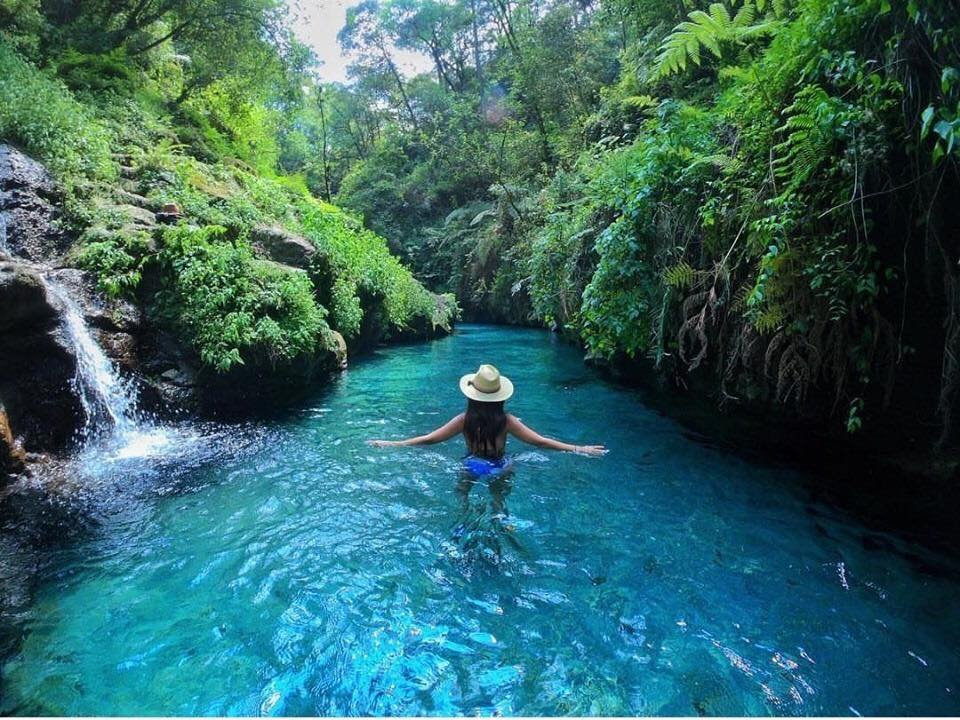

Pancho poza es el gran referente en el turismo y la identidad del municipio de Altotonga. Fue declarada reserva Natural Protegida en 1992, cuenta con aproximadamente 50 hectáreas de expanción.
¿Qué se puede hacer en Pancho Poza?
Hacer ejercicio. Es un lugar perfecto para ejercitarce, varias personas van a realizar su rutina de ejercicio en la mañana, ya que es ideal para caminar, correr, andar en bicicleta, nadar, etc.

Acampar. Tiene areas perfectas para pasar la noche en una experiencia de campamento con familia o amigos, y se pueden realizar actividades nocturnas como encender una fogata o jugar, siempre con mucha responsabilidad.
Pasar la tarde. Es una muy buena opcion para ir a comer con la familia un dia caluroso, se puede hacer un picnic, una carne asada o simplemente botanear. Los niños se pueden divertir y nadar con supervición.
Concluimos este fascinante recorrido por el río Pancho Poza con la esperanza de que hayas experimentado la magia de sus aguas y la riqueza de su entorno. Recomendamos su visita con responsabilidad y descubre la vitalidad de este río que fluye con historias y vida.
Bosque de Zoatzingo
Explora la Naturaleza Exuberante
Adéntrate en el corazón del Bosque de Zoatzingo y sumérgete en la exuberante naturaleza que lo caracteriza. Descubre una variedad única de flora y fauna autóctona que convierten este bosque en un santuario verde, un escape perfecto de la vida urbana. Con cada paso, te envolverá la frescura del aire y los sonidos serenos de la naturaleza.
Senderos Escénicos que Conectan con la Naturaleza
Embárcate en emocionantes senderos escénicos que serpentean a través del bosque. Estos caminos no solo ofrecen vistas panorámicas impresionantes, sino que también te brindan la oportunidad única de observar la diversidad de aves y vida silvestre que llaman hogar a este ecosistema único. Cada curva revela una nueva sorpresa natural, desde arroyos cristalinos hasta majestuosos árboles que se alzan hacia el cielo.
Descanso en Plena Naturaleza
Disfruta de momentos de paz y relajación en las áreas designadas para el descanso. Bancos estratégicamente ubicados te invitan a detenerte y absorber la tranquilidad del Bosque de Zoatzingo. Un lugar perfecto para reflexionar y conectarte con la naturaleza. Aprovecha para recargar energías mientras escuchas el susurro de las hojas y el canto de las aves.
Descubre la Vida Silvestre Única
El Bosque de Zoatzingo alberga una increíble diversidad de vida silvestre. Observa con cautela y podrías encontrarte con aves coloridas, mariposas danzantes y pequeños mamíferos que llaman hogar a este santuario natural. Cada encuentro ofrece una conexión íntima con la biodiversidad de Altotonga.
Escalinatas La Loma
Historia y Belleza en Cada Escalón
Las escalinatas es uno de los lugares más bonito y que en lo personal más disfruto de Altotonga. Tiene una hermosa vista, una cancha, lugares para hacer ejercicio y siempre hay personas con las que estar. Gran opción para ir con amigos a pasar la tarde.
Cancha "La Loma": Donde el Deporte y la Comunidad se Encuentran
La Cancha "La Loma" es más que un simple espacio deportivo. Aquí, la emoción del deporte se mezcla con risas y la camaradería de los residentes. Es la cancha publica más popular de aquí, siempre encontraras bueneas retas de basket. Ya sea que participes en un partido o simplemente observes, sentirás la energía vibrante que impulsa a este espacio único.
Vistas Panorámicas que Inspiran
Al llegar a la cima, serás recompensado con vistas panorámicas que capturan la esencia de Altotonga. Las montañas circundantes, el paisaje urbano y la naturaleza que se extiende hasta donde alcanza la vista, se convierten en un recordatorio constante de la belleza que rodea La Loma. Un lugar ideal para reflexionar y apreciar la grandeza de la ciudad. Se puede llegar a ver la Iglecia, El centro y algunas grandes montañas.
Panteón en Frente: Testigo Silencioso de la Historia
En frente de la Cancha "La Loma", el Panteón se erige como un testigo silencioso de la historia de Altotonga. Con lápidas que narran historias de antaño, este lugar sagrado ofrece un espacio de reflexión y conexión con los ancestros. La presencia del panteón añade profundidad cultural a la zona, recordándonos la importancia de honrar nuestras raíces.